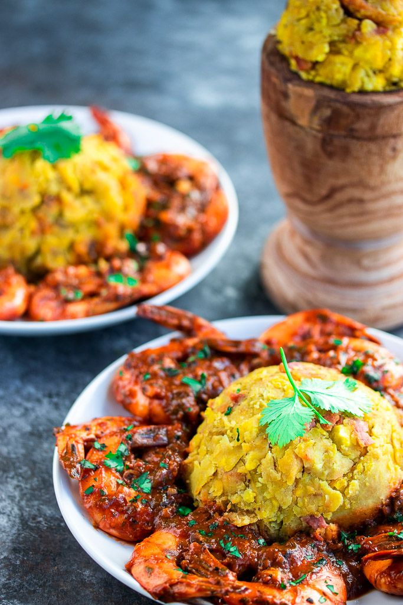

Mofongo con camarones
Ingredientes
- 3 plátanos verdes grandes
- 3 dientes de ajo
- 1 taza de camarones limpios
- 1/2 taza de chicharrón de cerdo troceado
- 1/2 taza de caldo de pollo
- Aceite para freír
- Sal y pimienta al gusto
- Perejil fresco para decorar
Preparación
- Pela y corta los plátanos en rodajas gruesas.
- Fríelos en aceite caliente hasta que estén dorados.
- En un pilón, machaca los plátanos con ajo, caldo y chicharrón.
- Forma bolas compactas de mofongo.
- En un sartén, saltea los camarones con ajo, sal, pimienta y un poco de caldo.
- Sirve el mofongo acompañado de los camarones encima, con salsa por encima.